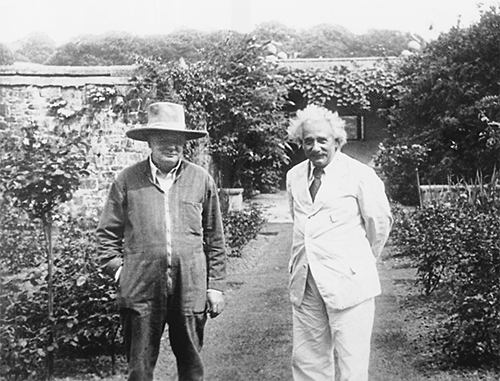

Với Winston Churchill tại tư dinh của Churchill, Chartwell, năm 1933
“Hôm nay, tôi quyết định từ bỏ công việc của mình ở Berlin và sẽ trở thành cánh chim thiên di suốt phần đời còn lại. Tôi đang học tiếng Anh nhưng nó chẳng muốn lưu lại trong bộ não già nua của tôi,” Einstein viết trong nhật ký hành trình.
Đó là vào tháng Mười hai năm 1931 khi ông đang trên tàu vượt Đại Tây Dương cho chuyến thăm nước Mỹ lần thứ ba. Ông đang trong tâm trạng trầm ngâm, nhận thức rõ rằng tiến trình khoa học có thể phát triển mà không cần đến ông, và tình hình nơi quê nhà có thể một lần nữa đẩy ông vào cảnh phải sống vất vưởng. Khi một cơn bão mạnh, dữ dội hơn nhiều những cơn bão mà ông từng chứng kiến, kìm chân con tàu của ông ở một chỗ nọ, ông đã ghi chép lại những suy nghĩ của mình trong nhật ký hành trình. Ông viết: “Ta cảm nhận được sự vô nghĩa của cá nhân, điều đó làm cho ta thấy hạnh phúc.”
Thế nhưng, Einstein vẫn do dự không biết có nên rời khỏi Berlin mãi mãi hay không. Nó đã là quê hương của ông suốt 17 năm qua, và đối với Elsa còn lâu dài hơn. Đây luôn là trung tâm tốt nhất cho ngành vật lý lý thuyết thế giới, bất chấp Copenhagen có những thành tựu gì. Mặc cho có những dòng chảy ngầm của nền chính trị đen tối đang, nó vẫn là nơi mà nhìn chung ông yêu mến và trọng nể, bất kể ông thu phục được số đông tụ tập ở Caputh hay khi ông ngồi tại Viện Hàn lâm Phổ.
Vào thời điểm đó, các lựa chọn dành cho ông tiếp tục tăng lên. Chuyến đi lần này tới nước Mỹ là để làm giáo sư thỉnh giảng hai tháng tại Caltech, một chức vị mà Millikan đang cố gắng biến thành thỏa thuận dài hạn. Những người bạn của Einstein ở Hà Lan suốt nhiều năm cũng cố gắng mời ông đến đó làm việc, và giờ còn có thêm cả Oxford.
Khi ông mới vừa thu xếp ổn định chỗ ở tại Câu lạc bộ Khoa học, một câu lạc bộ thanh nhã dành cho các cán bộ giảng viên ở Caltech, một khả năng khác lại xuất hiện. Một buổi sáng kia, ông được một nhà giáo dục nổi tiếng người Mỹ tên là Abraham Flexner ghé thăm, hai người đã đi bộ trong sân hơn một tiếng đồng hồ. Khi Elsa tìm thấy họ và gọi chồng về ăn trưa, ông xua tay ra dấu cho bà.
Flexner là người đã giúp định hình hệ thống giáo dục đại học ở Mỹ khi làm tại Quỹ Rockefeller, và giờ ông đang bắt tay vào xây dựng một “thiên đường” học thuật, nơi các học giả có thể thoải mái hoạt động mà không phải chịu áp lực học thuật, nghĩa vụ dạy học và “không bị cuốn vào những rối ren của hiện tại”, như lời ông này nói. “Thiên đường” này nhận được khoản tài trợ 5 triệu USD từ Louis Bamberger và chị của ông ta là Caroline Bamberger Fuld, vốn giàu lên nhờ việc bán chuỗi cửa hàng bách hóa vài tuần trước khi thị trường chứng khoán sụp đổ năm 1929; nó sẽ có tên là Viện Nghiên cứu Cao cấp và được đặt tại New Jersey, có lẽ nằm kế bên (nhưng không có mối liên hệ chính thức với) Đại học Princeton, nơi Einstein đã có khoảng thời gian thú vị.
Flexner đến Caltech xin Millikan góp một số ý tưởng, Millikan lúc đó nhất định (và về sau hối tiếc) nói rằng Flexner phải nói chuyện với Einstein. Cuối cùng Flexner cũng thu xếp được cuộc gặp này, và ông đã ấn tượng, như sau này kể lại, trước “tác phong cao quý, phong thái giản dị cuốn hút và sự khiêm nhường thành thực” nơi Einstein.
Rõ ràng Einstein sẽ là một mỏ neo, một cái tên đánh bóng hoàn hảo cho viện mới của Flexner, nhưng nếu Flexner đề nghị ngay trên chính sân nhà Millikan thì thật không phải phép. Thay vào đó, họ đồng ý rằng Flexner sẽ đến thăm Einstein ở châu Âu để thảo luận các vấn đề kỹ lưỡng hơn. Trong cuốn tự truyện của mình, Flexner khẳng định, ngay cả sau khi họ gặp nhau ở Caltech, “Tôi vẫn không biết liệu ông ấy [Einstein] có hứng thú với việc có liên hệ với Viện không”. Nhưng trong những bức thư mà ông này viết cho các mạnh thường quân của Viện khi đó thì ông ta lại khẳng định khác; Flexner đã đề cập tới Einstein như là “chú gà đang ấp” có những triển vọng mà họ cần phải xử lý thật thận trọng.
Lúc đó, Einstein đã có chút vỡ mộng với cuộc sống ở miền nam California. Khi ông phát biểu trước một nhóm khách quốc tế, trong đó ông vạch trần những thỏa hiệp kiểm soát vũ khí và chủ trương triệt để giải trừ quân bị, cử tọa của ông dường như chỉ xem ông là một món đồ tiêu khiển nổi tiếng. Ông viết trong một cuốn nhật ký: “Các tầng lớp giàu có ở đây tóm lấy bất cứ thứ gì có thể tiếp nguồn cho họ trong cuộc vật lộn với sự buồn chán.” Elsa đề cập đến sự khó chịu của Einstein trong bức thư gửi một người bạn. “Vụ việc này không chỉ là về sự thiếu xem trọng, mà còn là chuyện ông ấy bị xem như một kiểu tiêu khiển xã hội.”
Kết quả là, khi người bạn Ehrenfest ở Leiden viết thư nhờ ông giúp xin việc tại Mỹ, ông thẳng thừng bày tỏ trong lá thư trả lời, “Tôi phải nói thật với anh rằng về lâu dài tôi thích ở Hà Lan hơn là ở Mỹ”. “Ngoài việc có nhiều học giả thật sự xuất sắc ra, thì đó là một xã hội buồn chán và cằn cỗi, nó sẽ sớm khiến anh phát ớn.”
Tuy nhiên, về vấn đề này cũng như các vấn đề khác, suy nghĩ của Einstein không đơn giản. Rõ ràng là ông thích sự tự do, thậm chí phấn khích về địa vị người nổi tiếng mà nước Mỹ mang lại cho ông (quả đúng là thế). Giống như nhiều người khác, ông vừa chỉ trích nước Mỹ, vừa bị đất nước này thu hút. Ông lùi lại trước những màn phô trương điên cuồng trọng vật chất của nó, nhưng ông cũng thấy mình bị thu hút mạnh mẽ bởi sự tự do và tính cá nhân tự nhiên ở mặt kia của đồng xu.
Ngay sau khi trở về Berlin, nơi tình hình chính trị ngày càng căng thẳng, Einstein liền đi tới Oxford để thực hiện một loạt bài giảng khác. Một lần nữa, ông lại thấy tính hình thức ở đây thật ngột ngạt, và điều này đặc biệt trái ngược với nước Mỹ. Trong những cuộc họp tẻ nhạt ở Cao đẳng Christ Church, Oxford, ông ngồi tại căn phòng chung dành cho các giảng viên, tay cầm sổ ghi chép để dưới chiếc khăn trải bàn, nguệch ngoạch viết các phương trình. Một lần nữa, ông lại nhận ra rằng, dù có những khiếm khuyết về thị hiếu và dư thừa sự phấn khích, song nước Mỹ lại cho ông sự tự do mà có lẽ ông chẳng bao giờ tìm thấy ở châu Âu.
Vì vậy, ông vui mừng khi Flexner đến như đã hứa để tiếp tục cuộc trao đổi mà họ đã khơi ra ở Câu lạc bộ Khoa học. Ngay từ đầu, cả hai người đều hiểu rằng đây không đơn thuần là một cuộc thảo luận trừu tượng, mà là một phần trong nỗ lực tuyển mộ Einstein. Vì vậy Flexner hơi không thành thật khi về sau viết rằng chỉ đến khi cả hai tản bộ quanh bãi cỏ Tom Quad của Christ Church, “tôi mới nghĩ rằng” có thể Einstein có hứng thú tới làm việc tại viện mới. “Nếu sau khi suy nghĩ, ông thấy rằng việc này sẽ mang đến cho ông những cơ hội mà ông đánh giá cao, ông sẽ được chào đón như ý ông.”
Thỏa thuận đưa Einstein đến Princeton được quyết định vào tháng sau đó, tháng Sáu năm 1932, khi Flexner đến Caputh chơi. Hôm đó trời se se, Flexner mặc áo khoác, nhưng Einstein chỉ mặc đồ mùa hè. Ông đùa rằng ông thích mặc “theo mùa chứ không phải theo thời tiết”. Họ ngồi ở hàng hiên ngôi nhà mới của Einstein và nói chuyện cả buổi chiều rồi suốt bữa tối, đến tận khi Einstein tiễn Flexner ra xe buýt đi Berlin lúc 11 giờ tối.
Flexner hỏi Einstein rằng ông muốn mức lương là bao nhiêu. Einstein ngập ngừng đề nghị khoảng 3.000 USD. Flexner trông có vẻ sửng sốt. Einstein vội vàng nói thêm: “Ồ, mức thu nhập ít hơn vẫn ổn cho tôi phải không?”
Flexner buồn cười. Ông ta đã nghĩ con số phải nhiều hơn chứ không phải ít hơn. “Cứ để bà Einstein và tôi thu xếp chuyện này,” ông ta nói. Cuối cùng họ thỏa thuận mức lương là 10.000 USD một năm. Số tiền này sớm được tăng thêm khi Louis Bamberger, vị mạnh thường quân chính, phát hiện thấy nhà toán học Oswald Veblen, một viên ngọc khác của Viện có mức lương là 15.000 USD một năm. Bamberger nhất định nâng lương của Einstein lên bằng mức đó.
Có một điểm bổ sung cho thỏa thuận. Einstein nhất quyết đề nghị trợ lý của ông, Walther Mayer, cũng phải được nhận vào Viện với một vị trí riêng. Năm trước đó, ông đã nói với các nhà chức trách ở Berlin rằng ông hài lòng với những đề nghị hứa hẹn có bố trí việc làm cho Mayer ở nước Mỹ, một điều mà những người ở Berlin chẳng sẵn lòng. Caltech đã lẩn tránh yêu cầu này, và Flexner lúc đầu cũng vậy. Nhưng sau đó Flexner đồng ý.
Einstein không xem công việc của mình tại Viện là toàn thời gian nhưng rất có thể đó là công việc chính của ông. Elsa tế nhị đề cập đến việc này trong bức thư gửi Millikan. Bà hỏi: “Trong điều kiện như thế, anh sẽ vẫn muốn chồng tôi đến Pasadena vào mùa đông năm sau chứ? Tôi không chắc lắm về việc này.”
Thực ra, Millikan rất muốn có ông, và họ đồng ý rằng Einstein sẽ trở lại vào tháng Một, trước khi Viện được mở ở Princeton. Tuy nhiên, Millikan buồn bực vì ông không chốt được thỏa thuận lâu dài với Einstein, và ông nhận ra rằng khá lắm thì cuối cùng Einstein sẽ chỉ làm giảng viên thỉnh giảng cho Caltech. Cuối cùng thì ra chuyến đi sắp tới vào tháng Một năm 1933 mà Elsa giúp thu xếp lại là chuyến đi cuối cùng của ông tới California.
Millikan trút cơn giận lên Flexner. Ông viết, mối quan hệ của Einstein với Caltech “đã được dày công xây dựng trong suốt 10 năm qua”. Bởi đòn hiểm độc của Flexner mà cuối cùng Einstein sẽ dành thời gian cho một thiên đường mới nào đó, thay vì một trung tâm xuất sắc về vật lý thực nghiệm cũng như vật lý lý thuyết. “Liệu sự tiến bộ của nền khoa học Hoa Kỳ có được thúc đẩy bằng bước đi đó hay không, hoặc liệu hiệu quả công việc của Giáo sư Einstein có tăng được nhờ cuộc chuyển giao đó hay không, ít nhất đó là điều còn phải bàn cãi”. Ông đề xuất, như một sự nhượng bộ, rằng Einstein sẽ phân đôi thời gian ở Mỹ giữa Viện và Caltech.
Flexner không phải là người chiến thắng cao thượng. Ông bác lại lời buộc tội bằng việc nói dối rằng “hoàn toàn tình cờ” mà ông tới Oxford và nói chuyện với Einstein, một câu chuyện mà ngay cả những hồi ký sau này ông cũng kể lại đầy mâu thuẫn. Đối với việc chia sẻ thời gian công tác của Einstein, Flexner từ chối. Ông khẳng định mình đang chăm lo cho lợi ích của Einstein. Ông viết: “Tôi không tin rằng việc cư trú hằng năm trong những khoảng thời gian ngắn ở nhiều địa điểm lại là tốt và lành mạnh. Nếu đứng từ góc độ của Giáo sư Einstein để nhìn nhận toàn bộ vấn đề, tôi tin rằng ông và tất cả bạn bè của Giáo sư sẽ vui mừng rằng ta có thể tạo cho Giáo sư một chỗ ổn định.”
Về phần mình, Einstein không chắc mình sẽ phân chia thời gian như thế nào. Ông nghĩ rằng có thể thu xếp làm giáo sư thỉnh giảng ở Princeton, Pasadena và Oxford. Trên thực tế, thậm chí ông còn hy vọng giữ được công việc của mình tại Viện Hàn lâm Phổ và ngôi nhà yêu quý của ông ở Caputh, nếu mọi việc ở Đức không tệ đi. “Tôi sẽ không bỏ Đức,” ông tuyên bố khi vị trí ở Princeton được công bố vào tháng Tám. “Nhà tôi vẫn ở Berlin.”
Flexner xoay mối quan hệ theo hướng khác, bằng cách phát biểu với tờ New York Times rằng Princeton sẽ là ngôi nhà chính của Einstein. Flexner nói: “Einstein sẽ dành trọn thời gian cho Viện, và các chuyến đi nước ngoài của ông sẽ là những kỳ nghỉ, an dưỡng tại ngôi nhà mùa hè của ông tại ngoại ô Berlin.”
Cuối cùng vấn đề này được giải quyết bằng những sự kiện vượt khỏi tầm kiểm soát của cả hai. Mùa hè năm 1932, tình hình chính trị ở Đức ngày càng u ám. Khi Đảng Quốc xã tiếp tục thất bại trong cuộc bầu cử toàn quốc, nhưng lại tăng được số phiếu nắm giữ, vị tổng thống trong độ tuổi bát thập, Paul von Hindenburg đã lựa chọn ông Franz von Papen vụng về, người cố gắng điều hành đất nước bằng quyền lực thép, làm quốc trưởng. Khi Philipp Frank đến Caputh thăm Einstein vào mùa hè năm đó, Einstein than vãn: “Tôi tin chắc rằng chế độ quân phiệt sẽ không ngăn được cuộc cách mạng sắp tới của phe Dân chủ Xã hội [Đảng Quốc xã].”
Khi Einstein chuẩn bị cho chuyến thăm Caltech lần thứ ba vào tháng Mười hai năm 1932, ông phải chịu một sự sỉ nhục. Các tiêu đề về vị trí sắp tới của ông ở Princeton làm dấy lên sự phẫn nộ của Hội Phụ nữ Ái quốc Hoa Kỳ, một nhóm từng hoạt động mạnh mẽ nhưng đang dần suy yếu, gồm những người phản kháng tự xưng trước những người theo chủ nghĩa xã hội, chủ nghĩa hòa bình, chủ nghĩa cộng sản, các nhà nữ quyền và những người lạ khó ưa. Dù Einstein chỉ rơi vào hai nhóm đầu tiên, song những người phụ nữ ái quốc này chắc như đinh đóng cột rằng ông thuộc về tất cả các nhóm này, có thể chỉ trừ thuộc về nhóm theo chủ nghĩa nữ quyền.
Lãnh đạo Hội này, bà Randolph Frothingham (nếu xét theo hoàn cảnh này thì có vẻ họ Frothingham đặc biệt của bà là do nhà văn Dicken nghĩ ra), đã gửi bức thư đánh máy dài 16 trang tới Bộ Ngoại giao Hoa Kỳ nêu chi tiết những lý do cần “khước từ và từ chối cấp thị thực hộ chiếu cho Giáo sư Einstein”. Bức thư cáo buộc rằng ông là người theo chủ nghĩa hòa bình, có tinh thần quân phiệt và là một người cộng sản ủng hộ các học thuyết “cho phép tình trạng vô chính phủ ngang nhiên tồn tại mà không bị cản trở”. “Thậm chí cả Stalin cũng không liên quan đến nhiều hội nhóm quốc tế cộng sản – vô chính phủ nhằm thúc đẩy ‘điều kiện ban đầu’ cho cách mạng thế giới và tình trạng vô chính phủ tối thượng như ALBERT EINSTEIN” (chữ nhấn mạnh và viết hoa là từ bản gốc).
Đáng lẽ các quan chức Bộ Ngoại giao có thể lờ bức thư đó đi. Nhưng thay vào đó họ đưa nó vào một bộ hồ sơ dày dần lên trong suốt 23 năm sau đó, và cuối cùng trở thành một bộ tài liệu FBI với gần 1.427 trang tài liệu. Ngoài ra, họ cũng gửi một bản lưu ý tới Lãnh sự quán Hoa Kỳ ở Berlin để các viên chức ở đó phỏng vấn Einstein và xem các cáo buộc có đúng không trước khi cấp thị thực cho ông.
Ban đầu, Einstein thấy buồn cười khi đọc báo và thấy những luận điệu mà những người phụ nữ này đưa ra. Ông gọi cho người đứng đầu chi nhánh của tờ United Press ở Berlin, Louis Lochner, người đã trở thành bạn ông, và đưa ra một tuyên bố không chỉ chế giễu những cáo buộc mà còn chứng minh một cách chắc chắn rằng không thể buộc tội ông là người theo chủ nghĩa nữ quyền:
Chưa bao giờ tôi bị phái đẹp khước từ quyết liệt đến thế, hoặc nếu có, thì cũng chưa bao giờ lời khước từ ấy lại đến cùng lúc từ nhiều phụ nữ thế này. Nhưng những nữ công dân đề cao cảnh giác này có đúng không? Làm sao người ta có thể mở cửa đón chào một kẻ muốn ngấu nghiến những nhà tư bản cứng đầu một cách ngon lành và khoái trá như con quái vật Minotaur ở Crete ngấu nghiến những tì nữ Hy Lạp – kẻ buông ra những lời thô tục phản đối mọi loại chiến tranh trừ cuộc chiến không thể tránh khỏi với vợ của mình? Do vậy, hãy chú ý đến những người phụ nữ thông minh và yêu nước của các bạn và nhớ rằng thủ đô Rome hùng mạnh từng được cứu bởi tiếng quàng quạc của những cô ngỗng son sắt một lòng.
Tờ New York Times đăng một bài trên trang nhất với tiêu đề: “Einstein chế giễu quyết tâm của những người phụ nữ muốn chiến đấu chống ông/ Nhận xét về những cô ngỗng quàng quạc từng cứu Rome”. Nhưng hai ngày sau đó, Einstein không còn thấy buồn cười như trước nữa, khi ông và Elsa đang đóng gói hành lý để đi, ông nhận được điện thoại từ Lãnh sự quán Hoa Kỳ ở Berlin đề nghị ông đến phỏng vấn vào buổi chiều hôm đó.
Tổng Lãnh sự đang đi nghỉ vì vậy Phó Tổng Lãnh sự tiến hành cuộc phỏng vấn mà Elsa nhanh chóng kể lại chi tiết với các phóng viên. Theo tờ New York Times, tờ báo đã đăng ba bài ngay sau hôm diễn ra sự việc, cuộc gặp lúc đầu diễn ra tốt đẹp nhưng xấu dần.
”Niềm tin chính trị của ông là gì?” Người ta hỏi Einstein. Ông ngơ ngác rồi cười phá lên. Ông trả lời: “Tôi không biết, tôi không trả lời được câu hỏi này.”
“Ông có phải là thành viên của tổ chức nào không?” Einstein gãi “mái tóc xù rậm rạp” và quay sang Elsa. “À, có!” ông reo lên. “Tôi là thành viên hội Phản chiến.”
Buổi phỏng vấn kéo dài 45 phút, và Einstein càng lúc càng trở nên thiếu kiên nhẫn. Khi được hỏi liệu ông có phải là một người ủng hộ đảng cộng sản hoặc một đảng phái chủ trương vô chính phủ hay không, Einstein không giữ được bình tĩnh nữa. “Những người đồng hương của ông mời tôi,” ông nói. “Đúng, cầu xin tôi. Nếu tôi phải vào đất nước của ông như một người bị tình nghi, thì tôi không muốn đi nữa. Nếu ông không muốn cấp thị thực cho tôi, thì xin ông cứ nói thẳng ra.”
Sau đó, ông với lấy áo và mũ. “Ông làm thế này để yên lòng,” ông hỏi “hay ông làm theo lệnh cấp trên?”. Và chẳng đợi câu trả lời, ông kéo Elsa ra khỏi đó.
Elsa cho các tờ báo biết Einstein thôi đóng gói đồ đạc, và ông đã rời Berlin về ngôi nhà ở Caputh. Nếu đến trưa hôm sau mà vẫn chưa nhận được thị thực, ông sẽ hủy chuyến đi tới Mỹ. Khuya hôm đó, Lãnh sự quán đã ra một thông báo cho biết họ đã xét duyệt xong hồ sơ và sẽ cấp thị thực ngay.
Như thông tin chính xác được đưa trên tờ Times: “Ông không phải là người theo chủ nghĩa cộng sản và đã từ chối những lời mời đến giảng dạy ở Nga vì không muốn gây ấn tượng rằng mình ủng hộ chế độ ở Moscow.” Tuy nhiên, điều mà không một tờ báo nào đưa tin là Einstein đã từ chối ký vào một tuyên bố, theo yêu cầu của Lãnh sự quán, rằng ông không phải là thành viên của Đảng Cộng sản hay bất cứ tổ chức nào có ý định lật đổ Chính phủ Hoa Kỳ.
Bài viết trên tờ Times ngày hôm sau có tiêu đề: “Einstein tiếp tục đóng gói hành lý đi Mỹ”. Elsa nói với các phóng viên: “Với những bức điện tín được gửi dồn dập cho chúng tôi đêm qua, chúng tôi biết người Mỹ ở mọi tầng lớp đều khó chịu với sự vụ này.” Bộ trưởng Ngoại giao Henry Stimson nói ông lấy làm tiếc về vụ việc, nhưng không quên cho biết, Einstein “được đối xử lịch sự và trọng thị”. Khi ngồi trên chuyến tàu hỏa rời Berlin để tới Bremerhaven đi tàu thủy, Einstein vui vẻ nhắc lại việc này và nói rằng cuối cùng mọi thứ đều êm đẹp.
Khi rời nước Đức vào tháng Mười hai năm 1932, Einstein vẫn nghĩ rằng mình có thể quay lại đây dù ông không chắc chắn lắm về chuyện này. Ông viết cho Maurice Solovine, người bạn cũ lúc này đang xuất bản các tác phẩm của ông tại Paris, nhờ ông này gửi sách cho mình vào tháng Tư theo địa chỉ ở Caputh. Nhưng khi họ rời Caputh, Einstein nói với Elsa cứ như bằng linh cảm: “Em hãy ngắm kỹ nó đi. Em sẽ chẳng bao giờ còn thấy lại nó nữa đâu.” Đi cùng với họ trên con tàuOakland nhằm thẳng hướng California là 30 kiện hành lý, số hành lý có lẽ nhiều hơn cần thiết cho một chuyến đi dài ba tháng.
Do đó, tình thế trở nên khó xử và và tréo ngoe vô cùng khi Einstein phải thực hiện một nghĩa vụ công khai là phát biểu về mối quan hệ hữu nghị Đức – Mỹ. Để trang trải chi phí cho thời gian Einstein ở Caltech, ông Hiệu trưởng Millikan đã tìm được khoản tài trợ 7.000 USD từ quỹ Oberlaender Trust, một tổ chức đang nỗ lực thúc đẩy các hoạt động giao lưu văn hóa với nước Đức. Yêu cầu duy nhất do quỹ này đưa ra là Einstein có “một bài phát biểu trên sóng ủng hộ mối quan hệ Đức – Mỹ”. Khi Einstein tới Mỹ và được Millikan thông báo rằng ông “đến Mỹ với sứ mệnh định hình dư luận nhằm tăng cường mối quan hệ Đức – Mỹ”, Einstein có lẽ đã ngạc nhiên trước điều đó, cùng với 30 kiện hành lý của ông.
Millikan thường mong vị khách xuất sắc của mình tránh nói về các vấn đề không liên quan đến khoa học. Trên thực tế, không lâu sau khi Einstein đến, Millikan buộc ông phải hủy bài phát biểu ông định đưa ra trước chi hội của Liên đoàn Phản chiến ở Đại học California, Los Angeles (UCLA), trong đó ông dự định lên án nghĩa vụ quân sự bắt buộc một lần nữa. Ông viết trong bản thảo bài phát biểu mà ông không bao giờ đọc: “Chúng ta không nên để bất cứ thế lực nào trên Trái đất buộc chúng ta phải sẵn lòng tuân theo lệnh chém giết.”
Nhưng miễn là Einstein biểu thị thái độ thân Đức hơn là yêu chuộng hòa bình, Millikan sẽ vui mừng để ông nói về chính trị – đặc biệt là khi bài nói chuyện đề cập đến chuyện huy động ngân sách. Millikan không chỉ xin được 7.000 USD từ Oberlaender khi thu xếp cho Einstein phát biểu trên đài NBC, ông còn mời các nhà tài trợ lớn tới dự bữa tiệc diễn ra trước đó tại Câu lạc bộ Khoa học.
Einstein có sức hút lớn đến nỗi có cả một danh sách những người chờ mua vé tham dự. Trong số những người ngồi cùng bàn Einstein có Leon Watters, ông chủ giàu có của một hãng sản xuất dược phẩm, người New York. Để ý thấy Einstein trông có vẻ buồn chán, ông nhoài qua người phụ nữ ngồi giữa họ để mời Einstein một điếu xì-gà, chỉ ba lần rít là Einstein hút hết điếu thuốc này. Về sau họ đã trở thành những người bạn thân thiết, và Einstein đã ở lại căn hộ của Watters ở Đại lộ thứ Năm [Fifth Avenue] khi ông từ Princeton đến chơi New York.
Khi bữa tối kết thúc, Einstein cùng những người khách khác đến khán phòng Pasadena Civic, nơi hàng nghìn người mong chờ được nghe ông phát biểu. Toàn văn bài phát biểu đã được một người bạn dịch cho ông, và ông phát biểu bằng thứ tiếng Anh ngắc ngứ.
Sau khi bông đùa về những khó khăn của việc tỏ ra trang nghiêm khi mặc áo vét đuôi tôm, ông công kích những người sử dụng những lời “nặng cảm tính” để đe dọa quyền tự do ngôn luận. Từ “dị giáo” được sử dụng trong suốt các phiên tòa xử dị giáo là một trường hợp như thế, ông nói. Sau đó, ông trích dẫn những ví dụ mang hàm ý thù ghét tương tự ở nhiều quốc gia khác nhau: “Từ Cộng sản ở nước Mỹ hiện nay hay từ Tư sản ở Nga, từ Do Thái đối với nhóm phản động ở Đức”. Có vẻ không phải tất cả các ví dụ này đều được tính toán để làm hài lòng Millikan hay những mạnh thường quân chống cộng và thân Đức.
Luận điểm phê bình cuộc khủng hoảng thế giới khi đó, một cuộc khủng hoảng đang cần đến các sự tham gia khắc phục của các nhà tư bản, cũng vậy. Ông nói rằng suy thoái kinh tế, đặc biệt là ở nước Mỹ, dường như chủ yếu là do các tiến bộ công nghệ đã “gây suy giảm nhu cầu sử dụng nhân công”, và khiến sức tiêu dùng giảm sút.
Về phần nước Đức, ông đưa ra hai luận điểm thể hiện sự ủng hộ và làm Millikan hài lòng. Nước Mỹ khôn ngoan, ông nói, khi không gắt gao thúc bách Đức phải bồi thường chiến phí cho những tổn thất trong cuộc chiến tranh thế giới. Ngoài ra, ông cũng thấy rõ những lời biện hộ cho nhu cầu bình đẳng quân sự của Đức.
Tuy nhiên, điều đó không có nghĩa rằng nước Đức được phép lại ban hành nghĩa vụ quân sự bắt buộc, ông nhanh chóng nói thêm. Ông kết luận: “Ban hành nghĩa vụ quân sự rộng khắp đồng nghĩa với việc đào tạo giới trẻ theo tinh thần chiến tranh.” Millikan đáng lẽ đã có bài phát biểu riêng về nước Đức, nhưng cái giá cho việc buộc Einstein phải hủy bài phát biểu phản chiến là giờ đây phải cố ngồi nuốt những ý kiến này của Einstein.
Một tuần sau đó, tất cả những hạng mục này – tình hữu nghị Đức – Mỹ, việc trả chiến phí, tinh thần phản chiến, thậm chí chủ nghĩa hòa bình của Einstein – đã bị giáng một đòn mạnh, khiến tất cả đều trở nên vô nghĩa trong hơn một thập kỷ tiếp theo. Ngày 30 tháng Một năm 1933, trong khi Einstein đã an toàn ở Pasadena thì Adolf Hitler lên nắm quyền với tư cách là quốc trưởng mới của nước Đức.
Ban đầu, có vẻ Einstein không biết chắc sự kiện này có ý nghĩa gì với ông. Trong tuần đầu của tháng Hai, ông vẫn viết thư về Berlin bàn chuyện tiền lương cho chuyến quay về dự kiến vào tháng Tư. Các mục lác đác trong nhật ký hành trình của ông trong tuần đó chỉ ghi lại những cuộc thảo luận khoa học nghiêm túc, chẳng hạn về thí nghiệm tia sáng vũ trụ, và những cuộc giao lưu xã hội phù phiếm như: “Buổi tối ở nhà Chaplin. Chơi tứ tấu Mozart ở đó. Có một bà to béo chuyên nghề kết bạn với tất cả những người nổi tiếng.”
Tuy nhiên, đến cuối tháng Hai, với sự kiện Tòa nhà Quốc hội chìm trong biển lửa và các đảng viên Đảng Quốc xã lục soát nhà của người Do Thái, mọi sự đã đã rõ ràng hơn. Einstein viết cho một bà bạn: “Vì Hitler mà giờ tôi không dám về lại đất Đức nữa.”
Ngày 10 tháng Ba, một ngày trước khi ông rời Pasadena, Einstein dạo quanh khu vườn của Câu lạc bộ Khoa học. Evelyn Seeley của tờ New York World Telegram tìm thấy ông ở đó, đang trong tâm trạng cởi mở. Họ nói chuyện suốt 45 phút, và một trong những tuyên bố của ông hôm đó đã trở thành tít đầu của các tờ báo trên khắp thế giới. Ông nói: “Nếu tôi được quyền lựa chọn trong chuyện này, tôi sẽ chỉ sống ở một quốc gia ngự trị bởi tự do dân sự, sự khoan dung và bình đẳng của tất cả các công dân trước pháp luật. Những điều kiện này không tồn tại ở nước Đức vào thời điểm hiện nay.”
Khi Seeley vừa ra về, Los Angeles chao đảo vì một trận động đất thảm khốc – 116 người ở khu vực này bị thiệt mạng – nhưng Einstein dường như không hay biết. Là một biên tập viên tinh tế, Seeley đủ khả năng để kết thúc bài báo của mình bằng một ẩn dụ kịch tính: “Trên đường tới một hội thảo, khi đi ngang qua khuôn viên trường, Tiến sỹ Einstein cảm thấy mặt đất đang rung chuyển dưới đôi chân mình.”
Nhìn lại có thể thấy Seeley có lẽ đã viết những lời không quá phô trương, nhờ một sự việc kịch tính diễn ra đúng ngày hôm đó ở Berlin, dù cả cô lẫn Einstein đều không hay biết về chuyện này. Chiều đó, căn hộ của ông ở Berlin đã bị Đức Quốc xã xông vào lục soát hai lần, cô con gái Margot của Elsa co rúm trong căn hộ. Chồng Margot là Dimitri Marianoff đang chạy việc bên ngoài thì suýt bị một nhóm côn đồ bẫy. Anh đã nhắn Margot lấy những bài nghiên cứu của Einstein gửi cho Sứ quán Pháp, rồi tới Paris gặp anh. Margot thực hiện trót lọt cả hai việc. Ilse và chồng mình, Rudolph Kayser, thì trốn thoát thành công đến Hà Lan. Trong hai ngày tiếp theo, căn hộ ở Berlin bị lục soát thêm ba lần nữa. Einstein không bao giờ còn được thấy lại căn hộ này. May sao, những bài nghiên cứu của ông đã an toàn.
Đi tàu từ Caltech về phía đông, Einstein đến Chicago đúng sinh nhật thứ 54. Tại đây, ông tham dự một cuộc họp của Hội đồng Thanh niên vì Hòa bình, các diễn giả đề nghị mục đích cao cả của chủ nghĩa hòa bình vẫn cần tiếp tục duy trì bất chấp những sự việc xảy ra ở Đức. Một số người đã ra về với ấn tượng rằng ông hoàn toàn tán đồng. Một người viết: “Einstein sẽ không bao giờ từ bỏ phong trào hòa bình.”
Họ đã nhầm. Einstein bắt đầu thôi không còn phát biểu hùng hồn về chủ nghĩa hòa bình nữa. Vào bữa trưa mừng sinh nhật ngày hôm đó ở Chicago, ông nói những lời mơ hồ về việc cần có những tổ chức quốc tế tham gia gìn giữ hòa bình, nhưng ông hạn chế lặp lại những lời kêu gọi phản chiến. Ông có thái độ thận trọng tương tự một vài ngày sau đó, tại một bữa tiệc chiêu đãi giới thiệu một tuyển tập có đăng các bài viết theo tinh thần chủ nghĩa hòa bình của ông mang tên The Fight against War [Cuộc đấu tranh chống chiến tranh] ở New York. Tại đây, ông chủ yếu nói về những sự kiện đau buồn ở nước Đức. Ông nói rằng thế giới cần phải loan rộng thông tin về sự vi phạm đạo đức của Đức Quốc xã, nhưng ông cũng nói thêm rằng người dân Đức sẽ không biến thành quỷ dữ.
Đến tận khi lên tàu, ông cũng chưa rõ giờ mình sẽ sống ở đâu. Paul Schwartz, viên Lãnh sự Đức ở New York, một người bạn của Einstein khi ở Berlin, gặp riêng ông để đảm bảo ông không có kế hoạch về Đức. Ông ta cảnh báo: “Bọn họ sẽ nắm tóc ông lôi đi trên phố đấy.”
Điểm đến đầu tiên của ông, nơi con tàu thả ông xuống, là nước Bỉ; ông bảo với những người bạn rằng có thể sau đó ông sẽ đi Thụy Sĩ. Khi Viện Nghiên cứu Cao cấp mở vào năm sau, ông định sẽ ở đó bốn hoặc năm tháng mỗi năm. Hoặc có thể nhiều hơn. Một ngày trước khi lên đường, ông và Elsa đến Princeton để xem những ngôi nhà họ có thể mua.
Nơi duy nhất ở Đức mà ông muốn thăm lại, theo lời ông nói với các thành viên trong gia đình, là Caputh. Nhưng trên chuyến đi vượt Đại Tây Dương, ông nhận được tin Đức Quốc xã đã lục soát ngôi nhà này với danh nghĩa tìm kiếm nơi cất giấu vũ khí của cộng sản (dĩ nhiên không tìm thấy). Sau đó, bọn họ quay trở lại lần nữa, tịch thu chiếc thuyền yêu quý của ông và cho rằng nó có thể được sử dụng để buôn lậu. Từ tàu, ông gửi đi thông điệp: “Ngôi nhà nghỉ hè của tôi thường có vinh dự được đón tiếp nhiều vị khách. Họ luôn được chào đón. Chẳng ai có lý do gì để đột nhập vào đó cả.”
Tin báo về cuộc lùng sục ngôi nhà ở Caputh đã định đoạt mối quan hệ của Einstein với quê hương Đức. Ông sẽ không bao giờ quay về đó nữa.
Ngay sau khi con tàu cập bến Antwerp vào ngày 28 tháng Ba năm 1933, ông đã đi xe đến Lãnh sự quán Đức ở Brussels, nơi ông nộp lại hộ chiếu và (như ông đã từng làm khi còn trẻ) tuyên bố rằng mình sẽ bỏ quốc tịch Đức. Ông cũng gửi một bức thư, được viết từ khi ở trên tàu, trong đó có đơn từ chức gửi Viện Hàn lâm Phổ. Ông viết: “Trong tình hình hiện nay, sự phụ thuộc vào chính phủ Phổ là điều khiến tôi hấy không thể chịu nổi.”
Max Planck, người đã đưa ông về Viện Hàn lâm 19 năm trước, như trút được gánh nặng. Planck viết thư hồi đáp với một tiếng thở dài thấy rõ: “Ý này của anh dường như là cách duy nhất bảo đảm cho anh việc cắt đứt trong danh dự mối quan hệ với Viện.” Ông thêm vào một lời cầu xin tha thiết rằng “dù quan điểm chính trị của chúng ta có cách biệt lớn, song mối quan hệ thân tình trong đời tư của chúng ta không bao giờ thay đổi.”
Điều Planck hy vọng tránh được, giữa những đợt công kích kịch liệt sặc mùi bài Do Thái nhằm vào Einstein, trên báo chí Đức Quốc xã là những cuộc họp kỷ luật chính thức nhằm vào Einstein, điều mà một số Bộ trưởng trong Chính phủ đang yêu cầu. Điều đó khiến cá nhân Planck khổ sở, đồng thời sẽ là một vết nhơ đối với lịch sử của Viện Hàn lâm. Ông viết chomột thư ký của Viện Hàn lâm: “Tiến hành các thủ tục chính thức nhắm vào Einstein sẽ đẩy tôi vào những dằn vặt lương tâm sâu thẳm nhất. Mặc dù có một khoảng cách lớn chia rẽ tôi với anh ta trong vấn đề chính trị, song mặt khác tôi hoàn toàn chắc chắn rằng trong những thế kỷ sắp tới tên tuổi của Einstein sẽ được ca ngợi như là một trong những ngôi sao sáng nhất từng tỏa sáng ở Viện Hàn lâm.”
Viện Hàn lâm không hài lòng với việc để yên mọi chuyện như thế. Đức Quốc xã vô cùng tức giận với việc Einstein đã đi trước họ một bước bằng cách từ bỏ một công khai với các tiêu đề trên báo, quốc tịch Đức và tư cách thành viên Viện Hàn lâm trước khi họ tước đi của ông cả hai. Vì vậy, một thư ký của Viện Hàn lâm có cảm tình với Đức Quốc xã đã ra một tuyên bố khác. Đề cập đến một số bài báo về những bình luận vốn rất thận trọng của Einstein ở Mỹ, tuyên bố này lên án ông đã “tham gia vào việc khuấy động bạo ngược” cũng như có “các hoạt động khích động đám đông ở các nước ngoài”, và kết luận “do đó, Viện không có lý do gì phải thấy đáng tiếc về việc Einstein xin nghỉ việc”.
Max von Laue, một đồng nghiệp lâu năm và cũng là một người bạn của Einstein, phản đối tuyên bố này. Tại một cuộc họp của Viện Hàn lâm vào cuối tuần đó, ông cố gắng thuyết phục các thành viên phản đối hành động của viên thư ký. Thế nhưng không ai ủng hộ ông, thậm chí cả Haber, người Do Thái cải giáo từng là một trong những người bạn thân thiết nhất và ủng hộ Einstein nhất.
Einstein không thể cho qua một lời vu cáo như thế. Ông trả lời: “Tôi xin tuyên bố tôi chưa bao giờ tham gia bất cứ một hình thức khích động bạo lực nào.” Ông chỉ nói sự thật về tình hình nước Đức, thậm chí chưa viện đến những câu chuyện về các hành động tàn bạo. Ông viết: “Tôi miêu tả tình trạng hiện tại ở nước Đức là tình cảnh rối ren tinh thần của người dân.”
Lúc này, sự thể rõ ràng đúng là như thế. Đầu tuần đó, Đức Quốc xã đã kêu gọi tẩy chay các doanh nghiệp thuộc sở hữu của người Do Thái và cắm quân xung kích đứng chốt bên ngoài các cửa hàng của họ. Các giáo viên và sinh viên người Do Thái bị cấm đến đại học ở Berlin, thẻ của họ bị tịch thu. Nhà khoa học đoạt giải Nobel, Philipp Lenard, người đối địch với Einstein từ lâu, tuyên bố trên một tờ báo của Đức Quốc xã: “Ví dụ quan trọng nhất cho thứ ảnh hưởng nguy hiểm của giới Do Thái trong nghiên cứu tự nhiên là ông Einstein.”
Các cuộc trao đổi giữa Einstein và Viện Hàn lâm ngày càng trở nên căng thẳng. Một quan chức viết cho Einstein rằng ngay cả nếu ông không chủ động lan truyền những lời vu khống kia thì ông vẫn không tham gia “phe bảo vệ đất nước của chúng ta trước những lời nói dối được tung ra một cách ồ ạt vô tội vạ… Một lời nói tốt của ông cũng có thể có tác động rất tích cực ở nước ngoài.” Einstein cho rằng lý lẽ này thật vớ vẩn. Ông trả lời: “Bằng việc đưa ra một lời chứng như vậy về tình hình hiện tại, có lẽ tôi sẽ chỉ góp phần, dù là gián tiếp, vào tình cảnh tha hóa đạo đức và sự suy đồi các giá trị văn hóa hiện tại mà thôi.”
Toàn bộ cuộc tranh luận trở thành chủ đề gây tranh cãi. Đầu tháng Tư năm 1933, Chính phủ Đức thông qua một đạo luật tuyên bố những người Do Thái (là bất kỳ ai có ông bà là người Do Thái) không được giữ vị trí chính thức ở cả Viện Hàn lâm cũng như tại các đại học. Trong số những người bị buộc phải bỏ trốn có 14 nhà khoa học từng nhận giải Nobel và 26 trong số 60 giáo sư vật lý lý thuyết của đất nước. Trớ trêu thay, những người tị nạn phải chạy khỏi nước Đức hoặc những đất nước mà nước này đã chiếm đóng để chạy trốn chủ nghĩa phát xít – Einstein, Edward Teller177, Victor Weisskopf178, Hans Bethe179, Lise Meitner180, Niels Bohr, Enrico Fermi181, Otto Stern182, Eugene Wigner183, Leó Szilárd và nhiều người khác – lại cũng chính là những người giúp đảm bảo rằng phe Đồng minh chứ không phải Đức Quốc xã là phe đầu tiên phát triển được bom nguyên tử.
Planck cố gắng làm dịu các chính sách bài Do Thái, thậm chí đến mức đi ngược với Hitler ở góc độ cá nhân. Hitler đáp lại bằng một cơn thịnh nộ: “Các chính sách quốc gia của chúng ta sẽ không bị thu hồi hay thay đổi, kể cả đối với các nhà khoa học. Nếu việc đuổi các nhà khoa học Do Thái đồng nghĩa với việc hủy hoại nền khoa học đương đại của Đức thì chúng ta sẽ làm việc mà không có khoa học trong vài năm.” Sau đó, Planck im lặng tuân theo và cảnh báo các nhà khoa học rằng vai trò của họ không phải là thách thức các lãnh tụ chính trị.
Einstein không thể giận Planck, đối với ông Planck vừa là người đỡ đầu vừa như một bậc cha chú. Ngay cả trong những bức thư trao đổi giận dữ với Viện Hàn lâm, ông cũng vẫn đồng ý với yêu cầu của Planck rằng họ cần giữ nguyên sự tôn trọng cá nhân dành cho nhau. Bằng một giọng trang trọng và trân trọng như ông thường dùng khi viết thư cho Planck, ông viết: “Bất chấp mọi sự, tôi mừng rằng ông vẫn chào đón tôi trong tình thân ái cũ, và ngay cả những căng thẳng lớn nhất cũng không phủ được mây đen lên mối quan hệ của chúng ta. Những điều này sẽ giữ mãi được vẻ đẹp và sự thuần khiết từ bao lâu, bất kể chuyện gì đang xảy ra dưới kia.”
Trong số những người chạy trốn cuộc thanh trừng của Đức Quốc xã có Max Born, cuối cùng ông và người vợ chanh chua Hedwig của mình đến Anh. Khi hay tin, Einstein viết: “Tôi chưa bao giờ có ý kiến đặc biệt ưu ái nào về người Đức. Nhưng tôi phải thú nhận rằng mức độ tàn bạo và sự hèn nhát của họ khiến tôi phải bất ngờ.”
Born đón nhận mọi sự khá bình thản, và giống như Einstein, ông cũng dần trân trọng di sản Do Thái của mình. Trong một bức thư trả lời Einstein, ông viết: “Về vợ và con tôi, họ mới chỉ ý thức được mình là người Do Thái hoặc không phải là người Aryan (xin sử dụng từ chuyên môn cho vui) trong mấy tháng trở lại đây, còn tôi thì chưa bao giờ cảm thấy rõ chất Do Thái. Tất nhiên, giờ thì tôi có ý thức cực cao về điều đó, không chỉ vì chúng ta bị xem là thế, mà còn vì sự đàn áp và bất công khiến tôi nổi giận và muốn vùng lên.”
Cay đắng hơn cả là trường hợp của Fritz Haber, người bạn của cả Einstein và Maríc, người nghĩ rằng mình đã trở thành người Đức khi cải đạo Cơ Đốc giáo, giả bộ khí chất Phổ và là người tiên phong phát động cuộc chiến tranh khí độc vì tổ quốc mình trong Chiến tranh Thế giới Thứ nhất. Thế nhưng, theo quy định mới, ngay cả ông cũng bị buộc phải rời khỏi vị trí của mình tại Đại học Berlin và Viện Hàn lâm vào tuổi 64, trước khi ông đủ điều kiện nhận lương hưu.
Như để chuộc lỗi đã chối bỏ di sản của mình, Haber lao vào việc tổ chức cho những người Do Thái đột nhiên rơi vào cảnh phải đi tìm việc làm bên ngoài nước Đức. Einstein không cưỡng nổi việc châm chọc ông, theo kiểu đùa bỡn mà họ thường dùng trong các bức thư, về thất bại của thuyết hòa nhập của Haber. “Tôi có thể hiểu những xung đột nội tâm của anh,” ông viết. “Chuyện đó khác nào phải từ bỏ lý thuyết mà người ta dành cả đời để nghiên cứu. May sao, nó không xảy ra với tôi vì tôi chưa bao giờ đặt chút lòng tin nào vào nó.”
Trong quá trình giúp đỡ những người đồng tộc Do Thái mới tìm được của mình di cư, Haber trở thành bạn của nhà lãnh đạo phong trào Phục quốc Do Thái, Chaim Weizmann. Ông thậm chí cố hàn gắn vết rạn nứt quan điểm giữa Weizmann và Einstein về cách đối xử của người Do Thái đối với người Ả-rập và việc quản lý Đại học Hebrew. “Cả đời tôi, tôi chưa bao giờ cảm thấy mình thật là người Do Thái như lúc này,” Haber đã thốt lên như thế, dù điều đó chẳng thật sự nói lên gì nhiều.
Einstein đáp lại rằng ông vui mừng khi “tình yêu đầu tiên mà anh dành cho con quái thú tóc vàng kia đã nguôi đi phần nào”. Người Đức là giống tồi, Einstein nhất quyết thế, “trừ một vài người tốt (Planck có 60% chất cao quý còn Laue là 100%)”. Giờ thì trong thời khắc khổ ải này, ít nhất họ cũng được an ủi rằng họ đều đã bị quăng đi cùng với những người anh em đồng tộc của mình. “Đối với tôi, điều tuyệt vời nhất là việc giữ được mối liên hệ với một số người Do Thái tử tế – vài thiên niên kỷ của quá khứ văn minh quả thật rốt cuộc cũng có ý nghĩa nào đó.”
Einstein chẳng bao giờ gặp lại Haber. Haber đã quyết định sẽ cố gắng tạo lập một cuộc sống mới tại Đại học Hebrew ở Jerusalem, đại học mà Einstein từng góp một tay thành lập trước đó. Nhưng trên đường đến đó, tim ông đã ngừng đập, ông qua đời ở Basel.
Có gần 40.000 người Đức tập trung trước nhà hát lớn Berlin vào ngày 10 tháng Năm năm 1933, khi đoàn tuần hành với những sinh viên đeo dải băng chữ thập ngoặc và cánh côn đồ kéo ra từ các quán bia mang theo đuốc ném sách vào ngọn lửa lớn. Dân chúng đổ ra đường mang theo những chồng sách cướp được từ các thư viện và nhà riêng. Bộ trưởng Bộ Tuyên truyền Joseph Goebbels với gương mặt phừng phừng đứng sau bục và hét vang: “Trí tuệ Do Thái đã chết. Linh hồn Đức lại có thể tự do lên tiếng.”
Chuyện xảy ra ở Đức năm 1933 không chỉ là do sự tàn bạo của những lãnh đạo côn đồ gây ra và được những đám đông ngu dốt tiếp tay. Đúng như lời Einstein, nó còn là “sự thất bại hoàn toàn của tầng lớp được gọi là quý tộc trí thức”. Einstein và những người Do Thái khác bị trục xuất khỏi chốn từng là thành trì vĩ đại nhất thế giới của các cuộc khai phá tri thức cởi mở, trong khi chẳng ai trong những người ở lại làm gì nhiều để phản kháng. Nó là chiến thắng của những người như Philipp Lenard, người bài Do Thái đã công kích Einstein từ lâu và mới được Hitler bổ nhiệm làm người đứng đầu nền khoa học Aryan. “Chúng ta phải thừa nhận rằng thật đáng xấu hổ khi phải để người Đức học khoa học từ một người Do Thái. Hitler muôn năm!” Lenard thốt lên vào tháng Năm năm đó. Mười hai năm sau, quân Đồng minh đánh vào và hất cẳng Lenard khỏi vai trò này.
Mắc kẹt ở Bỉ, chủ yếu do tình hình của các chuyến tàu biển, hơn là lựa chọn có chủ ý, Einstein và những người đồng hành của mình – Elsa, Helen Dukas, Walther Mayer – tìm một chỗ ở ổn định trong thời gian lưu lại đó. Sau khi cân nhắc kỹ, ông nhận ra mình chưa chuẩn bị sẵn sàng về mặt cảm xúc để đưa gia đình mới đến Zurich, sống cạnh gia đình cũ. Ông cũng chưa sẵn sàng cam kết gắn bó với Leiden hay Oxford trong khi chờ đợi chuyến thăm đã lên lịch, hoặc có lẽ là chuyển hẳn đến Princeton. Vì vậy, ông thuê một ngôi nhà ở khu đồi cát Le Coq sur Mer, một khu nghỉ dưỡng gần Ostend, ở đây ông có thể bình tâm suy ngẫm, còn Mayer có thể thực hiện các phép toán về vũ trụ và các sóng của vũ trụ.
Tuy nhiên, bình yên là thứ thật khó nắm giữ. Ngay cả khi ở biển, ông cũng không hoàn toàn thoát khỏi những lời đe dọa của Đức Quốc xã. Báo chí đưa tin tên ông có trong danh sách mục tiêu ám sát, còn có tin đồn rằng số tiền thưởng treo cho đầu ông là 5.000 USD. Khi nghe tin này, Einstein đưa tay sờ lên đầu và vui vẻ kêu lên: “Thế mà tôi không biết nó giá trị đến vậy kia đấy!” Người Bỉ thì nghiêm túc hơn khi xem xét đến nguy cơ này, và trước sự khó chịu của ông, họ cử hai anh chàng sĩ quan cảnh sát vai u thịt bắp đến kè kè canh gác tại nhà ông.
Mùa hè năm đó, Philipp Frank, người vẫn đảm nhiệm công việc và văn phòng cũ của Einstein ở Prague, tình cờ đi qua Ostend và quyết định làm một cuộc ghé thăm bất ngờ. Ông hỏi người dân địa phương làm thế nào để tìm Einstein, bất chấp những lệnh cấm an ninh về việc cung cấp thông tin, ông nhanh chóng được chỉ đường tới ngôi nhà nằm giữa những đồi cát. Khi tới gần, ông nhìn thấy hai người đàn ông lực lưỡng, trông chẳng có vẻ gì giống những vị khách thường xuyên ghé thăm Einstein, đang tranh cãi dữ dội với Elsa. Thế rồi đột nhiên, như lời kể của Frank sau này, “hai người đàn ông đó trông thấy tôi, họ liền nhào tới và tóm lấy tôi.”
Elsa, mặt trắng bệch vì sợ, liền can thiệp. “Họ nghi ngờ anh là tên sát thủ đồn đại đấy.”
Einstein thấy toàn bộ tình huống khá buồn cười, bao gồm cả sự ngây thơ của những người dân địa phương đã tận tình chỉ đường cho Frank. Einstein kể lại các cuộc trao đổi thư từ với Viện Hàn lâm Phổ, ông đã để những bức thư này vào một tập tài liệu với vài dòng hóm hỉnh mà ông soạn cho một lá thư phúc đáp tưởng tượng: “Cảm ơn ông vì lá thư thật dịu dàng / Đúng là đặc tính Đức điển hình, giống như người gửi vậy.”
Khi Einstein nói rằng việc rời Berlin đúng là như được giải phóng, Elsa liền lên tiếng bảo vệ thành phố mà bà yêu quý từ lâu. “Anh thường bảo em mỗi khi về nhà sau các hội thảo vật lý rằng chẳng tìm đâu ra nơi nào khác có sự tập trung các nhà vật lý xuất chúng như thế kia mà.”
“Đúng vậy,” Einstein đáp. “Nhìn từ góc độ khoa học mà nói thì cuộc sống ở Berlin rất đẹp. Thế nhưng, anh luôn có cảm giác rằng có điều gì đó đè nén anh, và anh có linh cảm thường trực rằng kết cục sẽ chẳng tốt đẹp gì.”
Giờ thì Einstein đã tự do, những lời mời, cũng vì thế, đổ về từ khắp châu Âu. Ông nói với Solovine: “Giờ thì tôi nhận được những lời mời làm giáo sư còn nhiều hơn cả những ý tưởng duy lý có trong đầu tôi.” Mặc dù ông đã cam kết mỗi năm dành ít nhất vài tháng ở Princeton, nhưng ông bắt đầu nhận bừa những lời mời này. Ông chưa bao giờ giỏi từ chối các đề nghị.
Một phần là vì những lời mời này vô cùng hấp dẫn, và ông được phỉnh phờ. Phần nữa là vì ông vẫn đang cố gắng đạt được một thỏa thuận tốt hơn cho người phụ tá cho mình, Walther Mayer. Ngoài ra, những lời mời này cũng là một cách để ông và các đại học khác nhau thể hiện sự thách thức của họ đối với những gì mà Đức Quốc xã đang gây ra với các học viện hàn lâm của Đức. Ông thừa nhận với Paul Langevin ở Paris: “Có thể anh cảm thấy rằng bổn phận của tôi là không được chấp nhận những lời mời của Tây Ban Nha và Pháp. Tuy nhiên, sự từ chối đó có thể bị người ta hiểu nhầm vì cả hai lời mời này, ít nhất là ở một mức nào đó, đều là những dạng biểu tình chính trị mà tôi xem là quan trọng và không muốn làm hỏng.”
Việc ông chấp nhận một vị trí tại Đại học Madrid đã trở thành tít đầu trên các báo vào tháng Tư. Tờ New York Times viết: “Bộ trưởng Tây Ban Nha tuyên bố nhà vật lý đã chấp nhận vị trí giáo sư. Tin này được vui mừng đón nhận”. Tờ báo chỉ ra rằng điều này không ảnh hưởng gì đến phần việc hằng năm của Einstein ở Princeton, nhưng Einstein đã cảnh báo Flexner rằng việc này có thể ảnh hưởng nếu Mayer không nhận được vị trí giáo sư chính thức thay cho vị trí phó giáo sư tại Viện mới. Ông viết cho Flexner: “Đến giờ hẳn ông đã biết qua báo chí rằng tôi đã nhận một vị trí ở Đại học Madrid. Chính phủ Tây Ban Nha đã cho tôi quyền giới thiệu một nhà toán học để bổ nhiệm cho vị trí giáo sư chính thức… Tôi thấy mình trong tình thế khó xử: giới thiệu anh ta với Tây Ban Nha hay hỏi xem liệu anh có thể bổ nhiệm anh ta thành chức giáo sư chính thức hay không.” Phòng khi lời đe dọa như vậy chưa đủ rõ ràng, Einstein nói thêm: “Việc thiếu vắng anh ta ở Viện có thể gây ra một số khó khăn cho công việc của tôi.”
Flexner nhượng bộ. Trong một bức thư dài bốn trang, ông cảnh báo Einstein về những nguy cơ của việc quá gắn bó với phụ tá, ông kể những câu chuyện về việc nó có gây ra chuyện không hay trong nhiều trường hợp, nhưng rồi ông dịu lại. Dù chức danh của Mayer vẫn là phó giáo sư, nhưng anh được đưa vào biên chế, điều này đủ để đảm bảo cho thỏa thuận.
Einstein cũng chấp nhận hoặc bày tỏ sự quan tâm đến vị trí giảng viên ở Brussels, Paris và Oxford. Ông đặc biệt muốn dành thời gian ở Oxford. Ông viết cho bạn mình là giáo sư Frederick Lindemann184, một nhà vật lý ở đó, người sau này sẽ trở thành một cố vấn quan trọng cho Winston Churchill: “Ông có nghĩ rằng Cao đẳng Christ Church có thể tìm được một nơi ở cho tôi không? Không cần phải lớn như hai năm trước đâu.” Đến cuối thư, ông viết thêm một đoạn ngắn với những lời buồn bã: “Tôi sẽ chẳng bao giờ thấy lại mảnh đất nơi mình sinh ra nữa.”
Việc này làm nảy ra một câu hỏi hiển nhiên. Tại sao ông không cân nhắc dành chút thời gian cho Đại học Hebrew ở Jerusalem? Nói cho cùng thì nó phần nào cũng là một đứa con của ông. Einstein đã dành cả mùa xuân năm 1933 tích cực nói về việc khởi động một đại học mới, có lẽ là ở Anh, một nơi có thể là chỗ trú ẩn cho những học giả Do Thái bị xua đuổi. Tại sao ông không, thay vì thế, tuyển mộ họ cho Đại học Hebrew, và thậm chí cam kết gắn bó với nơi đây?
Vấn đề là trong suốt năm năm trước đó, Einstein đã có một cuộc chiến với những người quản lý ở đó, và cuộc tranh cãi cuối cùng lại xảy ra rất không đúng lúc vào năm 1933 ngay khi ông và các giáo sư khác chạy trốn Đức Quốc xã. Mục tiêu cơn giận của ông là Judah Magnes, Hiệu trưởng của trường, một cựu giáo sĩ ở New York, người cảm thấy mình có nghĩa vụ làm vui lòng những mạnh thường quân người Mỹ giàu có, bao gồm cả việc đề cử các vị trí trong đội ngũ giảng viên, ngay cả khi điều đó đồng nghĩa là phải thỏa hiệp với sự phân biệt học thuật. Einstein muốn đại học này hoạt động theo truyền thống châu Âu là các khoa có quyền quyết định chính về giáo trình và nhân sự.
Trong thời gian ở Le Coq sur Mer, sự thất vọng của Einstein đối với Magnes dâng lên mạnh mẽ. Ông viết cho Haber để cảnh báo về việc về dạy tại Đại học Hebrew: “Con người tham vọng và yếu nhược ấy được những kẻ yếu nhược đạo đức khác vây quanh.” Viết cho Born, ông gọi đó là một “trò bẩn”.
Những lời phàn nàn của Einstein đặt ông vào mối quan hệ khó xử với lãnh đạo phong trào Phục quốc Do Thái Chaim Weizmann. Khi Weizmann và Magnes gửi thư mời chính thức đề nghị ông về dạy tại Đại học Hebrew, ông tự cho phép mình tỏ thái độ ghét bỏ công khai. Ông nói với báo giới rằng đại học này “không đáp ứng được các nhu cầu về tri thức” và tuyên bố rằng vì vậy mà ông từ chối lời mời.
Magnes phải đi, Einstein tuyên bố. Ông viết thư cho ngài Herbert Samuel, Cao ủy Anh, người được giao phụ trách một ủy ban đề xuất cải cách, và nói rằng Magnes đã gây ra “thiệt hại to lớn” và “nếu người ta muốn tôi cộng tác, điều kiện của tôi là ông ta phải lập tức từ chức”. Vào tháng Sáu, ông cũng nói điều tương tự với Weizmann: “Chỉ một thay đổi mang tính quyết định về nhân sự sẽ thay đổi mọi việc.”
Weizmann là một người đổi chiều khéo léo. Ông này quyết định biến thách thức mà Einstein đặt ra thành một cơ hội giảm bớt quyền lực của Magnes. Nếu ông ta thành công, Einstein sẽ buộc phải về đây dạy. Trong một chuyến đi Mỹ vào cuối tháng Sáu, Weizmann nhận được câu hỏi: Tại sao Einstein không tới Jerusalem, nơi chắc chắn là chốn mà ông thuộc về. Einstein quả thật nên đến đó, Weizmann đồng tình, và Einstein đã nhận được lời mời. Nếu Einstein đến Jerusalem, Weizmann nói thêm, ông sẽ không còn phải là người lang thang giữa các đại học trên thế giới nữa.
Einstein tức giận. Weizmann biết rõ nguyên nhân ông không tới Jerusalem, ông nói, “và ông ta cũng biết trong trường hợp nào tôi sẽ sẵn sàng đảm nhận công việc ở Đại học Hebrew”. Điều này khiến Weizmann thành lập một ủy ban loại bỏ Magnes khỏi vị trí đảm trách trực tiếp các vấn đề học thuật của đại học này. Sau đó, trong chuyến thăm Chicago, ông tuyên bố các điều kiện của Einstein đã được đáp ứng, và cuối cùng Einstein có thể về dạy tại Đại học Hebrew. Cơ quan Điện tín Do Thái thuật lại, dựa trên thông tin từ Weizmann: “Albert Einstein chắc chắn đã quyết định chấp nhận chỉ đạo của viện nghiên cứu vật lý, Đại học Hebrew.”
Đây là một trò bịp của Weizmann, nó không đúng và sẽ chẳng bao giờ nhận được sự đồng ý. Nhưng ngoài việc làm Flexner ở Princeton phát hoảng, nó quả thật đã làm dịu cuộc tranh cãi ở Đại học Hebrew và thực hiện được cuộc cải cách ở đại học này.
Vốn là một nhà khoa học tài ba, Einstein có thể thay đổi thái độ khi gặp chứng cứ mới. Trong số những nguyên tắc cá nhân sâu sắc nhất của ông có chủ nghĩa hòa bình. Nhưng vào năm 1933, do việc Hitler lên nắm quyền, mọi thứ đã thay đổi.
Vì vậy, Einstein thẳng thắn tuyên bố, ông đã đi đến kết luận rằng chủ nghĩa hòa bình tuyệt đối và việc phản đối các hành động quân sự, ít nhất là tại thời điểm đó, không còn thích đáng nữa. Ông viết thư cho một Bộ trưởng của Hà Lan, người muốn ông ủng hộ cho một tổ chức hòa bình: “Thời gian này có vẻ không thích hợp cho việc ủng hộ hơn nữa những nguyên tắc nhất định của phong trào hòa bình cấp tiến. Chẳng hạn, một người có còn lý do xác đáng khi khuyên một người Pháp hoặc Bỉ từ chối nghĩa vụ quân sự trước hành động tái vũ trang của người Đức hay không?” Einstein thấy rằng câu trả lời lúc này đã rõ. “Thẳng thắn mà nói, tôi cho là không.”
Thay vì thúc đẩy chủ nghĩa hòa bình, ông củng cố hơn nữa cam kết xây dựng một tổ chức liên bang thế giới giống như Hội Quốc liên nhưng có thực quyền và quân đội chuyên nghiệp để thực thi các quyết định. Ông nói: “Đối với tôi, có lẽ trong tình hình hiện tại chúng ta cầm có một tổ chức siêu quốc gia, thay vì chủ trương xóa bỏ tất cả các các lực lượng. Những sự kiện gần đây đã dạy cho tôi một bài học về vấn đề này.”
Điều đó vấp phải sự phản đối của Liên đoàn Phản chiến Quốc tế, một tổ chức mà ông đã ủng hộ từ lâu. Huân tước Arthur Ponsonby, người đứng đầu tổ chức, phê phán ý tưởng này, gọi nó là một ý tưởng “không hay ho gì, vì nó là sự thừa nhận rằng vũ lực là nhân tố có thể giải quyết tranh chấp quốc tế”. Einstein không đồng ý. Sau mối đe dọa mới đang nổi lên ở Đức, triết lý mới của ông, ông viết, là “không giải trừ quân bị nếu an ninh không đảm bảo”.
Bốn năm trước, khi đến Antwerp, Einstein đã được Hoàng hậu Elisabeth của Quốc vương Albert I, con gái của một công tước xứ Bavaria, mời đến thăm cung điện hoàng gia Bỉ. Hoàng hậu yêu nhạc, và Einstein đã dành cả buổi chiều chơi nhạc Mozart, uống trà cùng bà và cố gắng giải thích với bà về thuyết tương đối. Năm sau ông lại được mời và được diện kiến Đức vua, chồng bà, sự giản dị của các thành viên trong hoàng tộc đã cuốn hút Einstein. Ông viết cho Elsa: “Hai con người giản dị này thuần khiết và tốt bụng hiếm thấy.” Một lần nữa, ông và Hoàng hậu lại cùng chơi nhạc Mozart, sau đó Einstein được mời ở lại dùng bữa riêng với Đức vua và Hoàng hậu. Ông thuật lại “Không có người phục vụ, chúng tôi ăn chay, rau bi-na với trứng và khoai tây chiên. Tôi vô cùng thích bữa tối đó, và tôi nghĩ rằng cảm giác đó đến từ cả hai phía.”
Tình bạn lâu bền đến cuối đời giữa ông với Hoàng hậu nước Bỉ đã bắt đầu từ đó. Sau này, tình thân giữa họ đóng một vai trò nhỏ trong sự tham gia của Einstein đến việc tạo ra bom nguyên tử. Trở lại tháng Bảy năm 1933, vấn đề đang được bàn đến là chủ nghĩa hòa bình và phản đối chế độ quân dịch.
“Chồng của người chơi vĩ cầm kia muốn nói chuyện với ông về một vấn đề cấp thiết.” Đó là một cách nói ẩn ý mà vua Albert dùng để giới thiệu mình, chỉ có số ít người trong đó có Einstein hiểu ra. Einstein đi thẳng tới cung điện. Đức vua đang bận lòng vì một vụ việc khuấy động đất nước. Hai người vì lương tâm mà phản đối nghĩa vụ quân sự đang bị bỏ tù vì từ chối thực hiện nghĩa vụ quân sự trong quân đội Bỉ, và những người theo chủ nghĩa hòa bình của các tổ chức quốc tế đang thúc giục Einstein đại diện cho họ phát biểu. Hẳn nhiên là việc này sẽ gây ra rắc rối.
Nhà vua hy vọng Einstein sẽ không làm thế. Vì tình bạn, sự kính trọng dành cho người lãnh đạo đất nước đang khoản đãi ông, cũng như những niềm tin mới và chân thành của mình, Einstein đồng ý. Ông thậm chí đi xa đến mức viết một bức thư mà ông đồng ý công bố.
Ông tuyên bố: “Trước tình hình có nhiều mối đe dọa như hiện nay, do các sự kiện ở Đức gây ra, có thể xem lực lượng vũ trang của Bỉ chỉ là phương tiện phòng thủ, chứ không phải là công cụ gây hấn. Và hiện tại, các lực lượng phòng thủ như vậy là cần thiết hơn bao giờ hết.”
Tuy nhiên, Einstein cảm thấy buộc phải đưa thêm một vài suy nghĩ. Ông lập luận: “Những người mà vì đức tin tôn giáo và đạo đức nên không thể thực hiện nghĩa vụ quân sự thì không nên bị đối xử như tội phạm. Họ phải được cho chọn một phương án thay thế là chấp nhận những công việc nặng nề, nguy hiểm hơn quân dịch.” Chẳng hạn, họ có thể được giao cho những công việc lao động lương thấp như “làm việc tại các hầm mỏ, xúc than trên tàu, chăm sóc người bệnh tại các khoa bệnh lây nhiễm hoặc trong các bệnh viện tâm thần”. Vua Albert phúc đáp bằng một lá thư cảm ơn nồng ấm, lịch sự và tránh thảo luận đến biện pháp thay thế kia.
Khi thay đổi quan điểm, Einstein không tìm cách giấu giếm nó. Vì vậy, ông viết một lá thư công khai gửi cho tổ chức yêu chuộng hòa bình đang khuyến khích ông can thiệp vụ việc ở Bỉ. Ông nói: “Nếu không phải cho đến gần đây thì chúng ta, những người đang sống ở châu Âu, có lẽ vẫn cho rằng mỗi cá nhân phản chiến sẽ làm thành một đòn công kích hiệu quả đối với chủ nghĩa quân phiệt. Thế nhưng, hiện nay, chúng ta đang phải đối mặt với một tình huống khác hẳn. Nằm ở trung tâm châu Âu là một cường quốc, nước Đức, rõ ràng bằng mọi cách đang thúc đẩy chiến tranh.”
Ông thậm chí đi xa đến mức tuyên bố một điều không ai có thể ngờ tới: nếu còn trẻ, ông sẽ tòng quân.
Tôi phải thẳng thắn nói với các bạn rằng: trong hoàn cảnh hiện nay, nếu tôi là người Bỉ, tôi sẽ không từ chối nghĩa vụ quân sự, mà sẽ vui mừng nhận lãnh nghĩa vụ đó và hiểu rằng mình đang phụng sự vì nền văn minh châu Âu. Điều này không có nghĩa tôi từ bỏ nguyên tắc mà tôi phản đối từ trước tới nay. Tôi chẳng mong gì hơn rằng từ chối nghĩa vụ quân sự sẽ sớm lại là một phương pháp hiệu quả phụng sự cho sự nghiệp tiến bộ của nhân loại.
Suốt nhiều tuần, câu chuyện gây ảnh hưởng vang dội khắp thế giới. “Einstein thay đổi quan điểm yêu chuộng hòa bình của mình/Khuyên người Bỉ nên vũ trang trước sự đe dọa của nước Đức,” tờ New York Times giật tít. Einstein không chỉ kiên định, mà ông còn nhiệt thành tự giải thích trước từng đợt công kích liên tiếp nhau.
Gửi ngài thư ký người Pháp của tổ chức Phản chiến Quốc tế: “Quan điểm của tôi không thay đổi, nhưng tình hình của châu Âu thì có… Khi mà nước Đức nhất định tái vũ trang và truyền bá một cách có hệ thống cho công dân của đất nước mình về một cuộc chiến phục thù, thì các quốc gia Tây Âu, không may thay, phải dựa vào phòng thủ quân sự. Quả thật, tôi dám khẳng định rằng nếu họ thận trọng, họ sẽ không chờ đợi bị tấn công trong tình trạng không vũ trang… tôi không thể nhắm mắt làm ngơ trước hiện thực đó.”
Gửi Huân tước Ponsonby, người bạn đồng chí hướng theo chủ nghĩa hòa bình của ông ở Anh: “Lẽ nào ngài không nhận ra rằng nước Đức đang cấp tập tái vũ trang và người toàn dân Đức đang bị tuyên truyền cho thấm nhuần chủ nghĩa dân tộc cũng như được huấn luyện để chuẩn bị cho chiến tranh?... Ngài sẽ gợi ý biện pháp bảo vệ nào, ngoài sức mạnh vũ trang có tổ chức?”
Gửi Ủy ban Phản chiến Bỉ: “Chừng nào còn chưa có một lực lượng cảnh sát quốc tế, thì các quốc gia vẫn phải tiến hành bảo vệ văn hóa. Tình hình ở châu Âu trong năm qua đã thay đổi nhiều, chúng ta sẽ thành ra làm lợi cho những kẻ thù khủng khiếp nhất nếu nhắm mắt làm ngơ trước thực tế này.”
Gửi một giáo sư người Mỹ: “Để ngăn chặn cái đại ác, trong thời gian này ta cần phải chấp nhận cái xấu nhỏ, đó là chế độ nghĩa vụ quân sự vốn chẳng ai ưa.”
Thậm chí một năm sau đó, với một giáo sĩ Do Thái ở Rochester: “Tôi vẫn là người yêu chuộng hòa bình nồng nhiệt như trước đây. Nhưng tôi tin rằng chúng ta chỉ có thể chủ trương từ chối nghĩa vụ quân sự khi mối đe dọa quân sự từ những nền độc tài hiếu chiến đối với các nước dân chủ không còn tồn tại.”
Einstein từng bị những người bạn bảo thủ cho là ngây thơ suốt bao nhiêu năm, nhưng giờ đây chính những người cánh tả này lại cảm thấy rằng niềm tin chính trị của ông đang lung lay. “Einstein, một thiên tài trong lĩnh vực khoa học, nhưng lại yếu đuối, thiếu quyết đoán và không nhất quán khi ở các lĩnh vực khác ngoài nó,” Romain Rolland, một người hết lòng theo chủ nghĩa hòa bình, viết trong nhật ký của mình. Việc bị cho là thiếu kiên định nhất quán khiến Einstein thấy buồn cười. Đối với một nhà khoa học, việc thay đổi học thuyết khi dữ kiện thực tế thay đổi không phải là biểu hiện của sự yếu đuối.
Mùa thu năm trước, Einstein đã nhận được một bức thư dài, với những lời lẽ dông dài và như thường lệ là đầy những tình cảm riêng tư từ Michele Besso, một trong những người bạn lâu năm nhất của ông. Phần lớn bức thư là về Eduard tội nghiệp, cậu con trai út của Einstein, cậu đã không chống lại nổi căn bệnh tâm thần và hiện đang phải ở tại một nhà thương điên gần Zurich. Einstein thường chụp hình với các cô con gái của vợ, chứ chưa bao giờ chụp với các cậu con trai của mình, Besso viết. Tại sao ông không đi du lịch với họ? Ông có thể đưa Eduard theo mình tới Mỹ một chuyến và hiểu hơn về cậu.
Einstein yêu thương Eduard. Elsa tâm sự với một người bạn: “Nỗi muộn phiền này gặm nhấm Albert.” Nhưng ông cảm thấy rằng căn bệnh tâm thần phân liệt của Eduard, có lẽ ở một mức độ nào đó, là do di truyền từ họ ngoại, và ông chẳng thể làm được gì với chuyện đó. Vì thế ông phản đối trị liệu phân tâm cho Eduard. Ông cho rằng việc đó là vô ích, đặc biệt trong những trường hợp bệnh thần kinh trầm trọng này có vẻ do di truyền gây ra.
Besso lại đã từng được phân tâm, và trong bức thư của mình, ông cởi mở và nguôi ngoai như khi ông trở lại thời mà cả hai thường tản bộ từ Cục Cấp bằng Sáng chế về nhà hơn 25 năm trước. Ông có những vấn đề riêng trong cuộc sống hôn nhân, Besso nói, đề cập về Anna Winteler, người mà Einstein giới thiệu cho ông. Nhưng bằng cách xây dựng mối quan hệ tốt hơn với con trai mình, Besso đã duy trì được cuộc hôn nhân và làm cho cuộc sống của mình trở nên ý nghĩa hơn.
Einstein trả lời rằng ông hy vọng có thể đưa Eduard đi cùng mình tới Princeton. “Không may là mọi thứ đều cho thấy gen di truyền mạnh thể hiện ra rành rành. Từ khi Tete còn bé, tôi đã thấy điều đó dần bộc lộ nhưng chẳng có cách gì thay đổi được. Những ảnh hưởng bên ngoài chỉ đóng vai trò rất nhỏ trong những trường hợp như thế, so với những ẩn ức sâu kín bên trong, mà điều đó thì chẳng ai có thể làm được gì cả.”
Sự giằng co là ở đó, và Einstein biết mình phải gặp và quả thật muốn gặp Eduard. Ông dự định đi Oxford vào cuối tháng Năm, nhưng ông quyết định hoãn lại một tuần để có thể tới Zurich ở cùng con trai. “Tôi không thể đợi 6 tuần nữa mới gặp thằng bé,” ông viết cho Lindemann và xin thứ lỗi. “Tuy ông không làm cha, nhưng tôi biết ông sẽ hiểu.”
Mối quan hệ của ông với Marić đã cải thiện nhiều đến mức khi bà nghe nói ông không thể quay về Đức được nữa, bà đã mời cả ông và Elsa đến Zurich sống cùng. Ông vui mừng ngạc nhiên, và ông đã ở nhà bà khi đến đó một mình vào tháng Năm năm đó. Nhưng chuyến thăm Eduard của ông hóa ra lại đau lòng hơn ông dự tính.
Einstein mang theo cây vĩ cầm. Trước đây, ông và Eduard thường chơi cùng nhau, thể hiện cảm xúc bằng âm nhạc theo những cách không thể diễn đạt bằng lời. Bức ảnh chụp họ trong chuyến thăm đó đặc biệt buồn. Họ ngượng ngập ngồi cạnh nhau, trong bộ vét, ở nơi có vẻ là phòng khách của nhà thương điên. Einstein tay cầm đàn và cây vĩ, nhìn đi chỗ khác. Eduard nhìn chăm chăm xuống chồng giấy, nỗi đau dường như khiến khuôn mặt đầy thịt của anh méo mó.
Khi Einstein rời Zurich đi Oxford, ông vẫn định rằng trong những năm tới, mỗi năm ông sẽ dành nửa thời gian ở châu Âu. Ông không biết rằng, hóa ra đây là lần cuối mình gặp lại người vợ đầu tiên và cậu con út.
Trong thời gian ở Oxford, Einstein thực hiện loạt bài giảng Herbert Spencer, trong đó ông giải thích triết lý khoa học của ông. Sau đó, ông đến Glasgow, ở đây ông nói về quá trình phát hiện thuyết tương đối rộng. Ông thích chuyến đi này đến độ chẳng bao lâu sau khi trở về Le coq sur Mer, ông quyết định lại đến Anh vào cuối tháng Bảy theo lời mời thật ít ai ngờ của một người quen.
Trung tá người Anh Oliver Locker-Lampson có nhiều điều mà Einstein không có. Ông ta là một người ưa phiêu lưu, con của một nhà thơ thời Victoria, và từng là phi công lái máy bay trong Chiến tranh Thế giới Thứ nhất, chỉ huy một đơn vị thiết giáp ở Lapland và Nga, cố vấn cho Đại Công tước Nicholas và có thể chính là người đã vạch âm mưu trong vụ sát hại Rasputin. Giờ ông là một luật sư, một nhà báo và là thành viên Nghị viện. Ông từng học ở Đức, ông biết ngôn ngữ và con người đất nước này, có lẽ chính vì thế ông đã trở thành người đầu tiên chủ trương chuẩn bị chiến đấu với Đức Quốc xã. Vì mê những điều lý thú, nên ông đã bắt đầu viết thư cho Einstein – ông mới chỉ gặp Einstein vào một lần đi ngang qua Oxford – và mời Einstein tới làm khách của mình tại Anh.
Khi Einstein nhận lời mời, vị Trung tá hăng hái tận dụng mọi điều có thể từ chuyến thăm này. Ông đưa Einstein đến gặp Winston Churchill, khi đó đang chịu những năm làm thành viên đối lập của Nghị viện. Tại bữa trưa trong khu vườn Chartwell của nhà Churchill, họ thảo luận về việc nước Đức đang tái vũ trang. Ngày hôm đó, Einstein viết thư cho Elsa: “Ông ấy là người cực kỳ khôn ngoan. Anh thấy rõ ràng rằng những người này đã chuẩn bị và quyết tâm hành động sớm và kiên quyết.” Đánh giá này nghe có vẻ đúng là đánh giá của một người vừa ăn trưa với Churchill.
Locker-Lampson cũng đưa Einstein đến gặp Austen Chamberlain, một người cũng chủ trương tái vũ trang, và cựu Thủ tướng Lloyd George. Khi đến nhà của ngài cựu Thủ tướng, Einstein được mời ký tên vào cuốn sổ dành cho khách thăm. Khi viết đến phần địa chỉ gia đình, ông dừng một lúc rồi viết ohne, không có.
Ngày hôm sau, Locker-Lampson thuật lại sự việc này khi giới thiệu với Nghị viện một dự luật “mở rộng cơ hội cấp quốc tịch cho người Do Thái” bằng một lối diễn đạt hết sức hoa mỹ, trong khi Einstein ngồi nghe tại khu vực dành cho khách mời trong bộ đồ bằng vải lanh trắng. Nước Đức đang phá hủy văn hóa của đất nước mình và đe dọa đến sự an toàn của các nhà tư tưởng vĩ đại. “Đất nước đó đã vứt bỏ công dân mang lại vinh quang vẻ vang nhất cho mình, Albert Einstein,” ông nói. “Khi được đề nghị viết địa chỉ của mình vào sổ khách ghé thăm, ông ấy đã phải viết: không có. Đất nước này chắc chắn sẽ rất vinh dự khi đề nghị bố trí cho ông một chỗ ổn định tại Oxford.”
Khi trở về ngôi nhà nằm bên bờ biển ở Bỉ, Einstein quyết định rằng có một vấn đề mà ông nên làm rõ, hay chí ít là thử làm rõ, trước khi đến Mỹ một lần nữa. Hội Phụ nữ Ái quốc và những người khác đang tìm cách ngăn cản ông, cho ông là cộng sản hoặc một kẻ lật đổ nguy hiểm, và ông thấy cáo buộc của họ vừa xúc phạm vừa tiềm ẩn những rắc rối.
Vì những cảm thức theo tinh thần chủ nghĩa xã hội, những gì đã có với chủ nghĩa hòa bình và sự phản đối của ông với chủ nghĩa phát xít, khi đó – và suốt cuộc đời ông – người ta đã nghĩ rằng có thể Einstein ủng hộ những người Cộng sản Nga. Việc ông sẵn lòng cho dùng tên mình trên bất cứ bản tuyên ngôn hay tiêu đề nghe có vẻ xứng đáng nào – mà không phải lúc nào cũng xác định rằng liệu các nhóm liên quan có phải là mặt trận cho các chương trình hành động khác không – cũng không giúp ích được gì.
May mắn là dù sẵn lòng cho các tổ chức nhỏ mượn tên, song ông lại ghét xuất hiện tại các cuộc họp. Vì vậy, không có nhiều nhóm chính trị, và chắc chắn là không có nhóm cộng sản nào, mà ông thật sự tham gia. Ngoài ra, ông cũng từng nói rõ mình sẽ không bao giờ đến nước Nga vì ông biết rằng mình có thể bị lợi dụng cho các mục đích tuyên truyền.
Khi ngày đi đến gần, Einstein có hai cuộc phỏng vấn để nói rõ quan điểm của mình. Ông nói với phóng viên Leo Lania của tờ New York World Telegram, cũng là một người tị nạn Đức như ông, rằng: “Tôi vì được thuyết phục mà trở thành một nhà dân chủ. Chính vì thế mà tôi không tới Nga dù đã nhận được những lời mời hết sức nhiệt tình. Chuyến đi Moscow của tôi chắc chắn sẽ bị các nhà cầm quyền Xô Viết khai thác để làm lợi cho mục đích chính trị của họ. Tôi phản đối chủ nghĩa Bolshevik không kém gì chủ nghĩa phát xít. Tôi phản đối tất cả những kẻ độc tài.”
Trong một bài phỏng vấn khác xuất hiện cả trên tờ Times của London và tờ New York Times, Einstein thừa nhận rằng đôi khi ông bị lừa bởi các tổ chức vờ là những người yêu chuộng hòa bình hoặc nhân văn chân chính nhưng “thật ra không là gì khác hơn công cụ tuyên truyền ngụy trang phục vụ cho chế độ chuyên quyền của nước Nga”. Ông nhấn mạnh: “Tôi chưa bao giờ ủng hộ chủ nghĩa cộng sản và bây giờ cũng vậy.” Bản chất niềm tin chính trị của ông là chống lại bất cứ thế lực nào “nô lệ hóa các cá nhân bằng khủng bố và vũ lực, bất kể là dưới chế độ nào”.
Những tuyên bố này rõ ràng được đưa ra nhằm dập tắt bất cứ sự tranh cãi nào ở Mỹ về xu hướng chính trị mà người ta cho là của ông. Nhưng chúng có sự thật trong đó. Đôi khi ông bị những nhóm có chương trình hành động khác hẳn với vẻ ngoài lừa, nhưng từ khi còn nhỏ, sự chán ghét chủ nghĩa độc tài bất kể thuộc cánh tả hay cánh hữu làm chính kim chỉ nam chỉ đường cho ông.
Cuối mùa hè năm đó, Einstein nhận được tin buồn. Bạn ông là Paul Ehrenfest, mới ly thân với vợ và cũng là cộng sự của mình, đã đến thăm cậu con trai 16 tuổi mắc bệnh down tại bệnh viện Amsterdam. Tại đây, Ehrenfest rút súng bắn vào mặt rồi móc mắt đứa con của mình, nhưng không giết nó. Sau đó ông chĩa súng vào mình rồi tự tử.
Hơn 20 năm trước, Ehrenfest, một nhà vật lý Do Thái trẻ tuổi đang ngao du đây đó đã xuất hiện ở Prague, nơi Einstein làm việc, và nhờ ông xin việc. Sau khi ghé quán cà phê và nói chuyện với nhau về vật lý suốt hàng giờ liền trong ngày hôm đó, họ đã trở thành những người bạn hết lòng với nhau. Ehrenfest có suy nghĩ khác với Einstein về nhiều mặt. Ehrenfest, theo nhận định của Einstein, là “một người yếu đuối, thiếu tự tin,” giỏi phê bình tìm ra lỗ hổng trong những học thuyết đã có hơn là xây dựng học thuyết mới. Điều đó khiến Ehrenfest hợp với nghề giáo viên, đó là “giáo viên giỏi nhất mà tôi [Einstein] biết”, nhưng “cảm giác thiếu thốn, phi lý về mặt khách quan khiến anh ấy lúc nào cũng bứt rứt”.
Tuy nhiên, Ehrenfest giống Einstein ở một điểm quan trọng. Ehrenfest không bao giờ có thể tìm được tiếng nói chung với cơ học lượng tử. Einstein viết cho Ehrenfest: “Phải học và dạy những điều mà người ta không thể tâm phục khẩu phục luôn là vấn đề khó khăn. Và đối với một người quá đỗi chân thật, nó sẽ còn khó gấp đôi.”
Einstein, người biết rằng bước sang tuổi 50 là như thế nào, đáp lại chuyện này bằng một mô tả nói nhiều về phương pháp tiếp cận riêng của mình đối với cơ học lượng tử cũng như về câu chuyện của Ehrenfest: “Thêm vào việc này là khó khăn ngày càng lớn của việc chấp nhận những tư tưởng mới mà những người trên 50 tuổi luôn phải đối mặt. Tôi không biết liệu có bao nhiêu độc giả đọc những dòng này hiểu được toàn bộ tấn bi kịch đó.” Quả đúng là Einstein.
Việc Ehrenfest tự tử khiến Einstein suy sụp nặng, cộng thêm cả việc cường độ những lời đe dọa lấy mạng sống của ông cũng ngày càng tăng. Tên tuổi của ông bị gắn nhầm với một quyển sách công kích nỗi kinh hoàng do Hitler gây ra; ông để tên của mình được sử dụng cho một ghế danh dự của một ủy ban chịu trách nhiệm xuất bản cuốn sách, thế nhưng ông chưa từng đọc qua cuốn sách đó. Các bài báo của người Đức giật tít “sự bỉ ổi của Einstein” bằng chữ đỏ. Một tạp chí đưa ông vào danh sách kẻ thù của nước Đức, liệt kê “tội ác” của ông và kết lại bằng câu “vẫn chưa bị treo cổ”.
Vì vậy, Einstein quyết định nhận lời mời của Locker-Lampson tới thăm nước Anh lần nữa vào tháng cuối cùng trước khi ông lên đường đi Mỹ trong tháng Mười. Elsa muốn ở lại Bỉ để đóng hành lý, bà nhờ một phóng viên của tờ Sunday Express thu xếp cho Einstein đến nước Anh an toàn. Là một nhà báo giỏi, ông này đã đồng hành cùng Einstein suốt chuyến đi và thuật lại, khi đi qua eo biển, Einstein đã rút quyển sổ của mình ra và mê mải ngồi viết các phương trình.
Như trong một tập phim về điệp viên James Bond, Locker-Lampson đã cắt cử hai nữ “trợ lý” trẻ đưa Einstein tới một ngôi nhà biệt lập mà ông sở hữu nằm giữa một cánh đồng hoang ven bờ biển phía đông nam London. Tại đây, Einstein bị cuốn vào một guồng xoáy tếu táo kín đáo mà công khai. Hai cô gái kia đứng tạo dáng bên cạnh ông, tay ôm súng săn để chụp ảnh gửi cho các cơ quan báo chí, và Locker-Lampson tuyên bố: “Bất kỳ ai không phận sự mà tiến đến gần sẽ phải lĩnh đạn chì.” Einstein bảo rằng chuyện an ninh của mình không đáng lo nữa. Ông nói với một người khách: “Vẻ đẹp của những cận vệ của tôi sẽ khiến kẻ thủ mưu phải buông vũ khí còn nhanh hơn cả mấy khẩu súng của họ.”
Lọt qua vòng an ninh khiêm tốn này gồm có một cựu Bộ trưởng Ngoại giao, ông này muốn trao đổi về cuộc khủng hoảng ở châu Âu; Dimitri Marianoff, con rể của Einstein, anh ta đến để phỏng vấn Einstein cho bài viết mà anh ta bán cho một tạp chí ở Pháp; Walther Mayer, người giúp ông tiếp tục công việc cần mẫn, khổ ải là tìm kiếm các phương trình trường thống nhất; và nhà điêu khắc nổi tiếng Jacob Epstein, ông này đã bỏ ra ba ngày để làm một bức tượng bán thân thật đẹp cho Einstein.
Người duy nhất gặp chuyện với các nữ cận vệ là Epstein, ông đã hỏi xem họ có thể tháo cánh cửa ra khỏi bàn lề để ông có được góc độ tốt hơn cho tác phẩm điêu khắc của mình hay không. “Họ hài hước hỏi liệu sau đó tôi có muốn dỡ luôn cả trần nhà không,” Epstein nhớ lại. “Tôi nghĩ lẽ ra tôi nên thích việc đó, nhưng tôi không đề nghị làm thế bởi các thiên thần phục vụ có vẻ như hơi bực bội vì tôi đã xâm phạm kỳ nghỉ dưỡng của Giáo sư.” Tuy nhiên, sau ba ngày, những nữ cận vệ đã niềm nở hơn với Epstein, và mọi người bắt đầu uống bia với nhau cuối các những buổi Einstein ngồi làm mẫu.
Einstein vẫn giữ được sự hài hước suốt thời gian đó. Trong số những bức thư ông nhận được khi ở Anh có thư của một người đưa ra giả thuyết cho rằng sự tồn tại của lực hấp dẫn có nghĩa là khi Trái đất quay, đôi khi con người sẽ bị dựng ngược hoặc nằm ngang. Tác giả bức thư đưa ra phỏng đoán là có lẽ chính vì điều đó mà con người thỉnh thoảng làm những việc ngớ ngẩn như yêu đương. “Yêu đương không phải là việc ngu ngốc nhất mà con người thực hiện,” Einstein viết trong thư trả lời. “Tuy nhiên, ta cũng không thể buộc lực hấp dẫn phải chịu trách nhiệm cho chuyện đó được.”
Sự xuất hiện của Einstein trong chuyến đi này chủ yếu là để phát biểu vào ngày 3 tháng Mười tại Hội trường Albert Hoàng gia, London, với mục đích kêu gọi quyên góp ủng hộ cho những học giả người Đức phải bỏ xứ mà đi. Một số người, rõ ràng là có lý do chính đáng, nghi ngờ rằng Locker-Lampson đã thổi phồng mối đe dọa an ninh và sự rùm beng về nơi ẩn náu của Einstein để tăng giá vé. Nếu đúng là vậy, ông đã thành công. Toàn bộ hội trường chật kín cả 9.000 chỗ ngồi, nhiều người phải chen nhau ngồi giữa các lối đi và sảnh. Một nghìn sinh viên làm nhiệm vụ hướng dẫn và bảo vệ trước nguy cơ xảy ra bất cứ cuộc biểu tình thân Đức Quốc xã nào (không có cuộc nào như thế).
Einstein phát biểu bằng tiếng Anh về mối đe dọa hiện tại đối với tự do, nhưng ông cẩn thận không công kích cụ thể chế độ ở nước Đức. Ông nói: “Nếu chúng ta muốn chống lại những thế lực đe dọa đàn áp tự do tri thức và cá nhân, chúng ta phải hiểu rõ chúng ta sẽ mất gì. Nếu không có sự tự do đó, sẽ không có Shakespeare, không có Goethe, không có Newton, không có Faraday, không có Pasteur185, không có Lister186.” Tự do là nền tảng cho sáng tạo.
Ông cũng nói về nhu cầu sống cô độc. Ông nói: “Sự đơn điệu của một cuộc sống tĩnh lặng sẽ kích thích đầu óc sáng tạo”, và nhắc lại một gợi ý mà ông từng đề xuất khi còn trẻ: có thể thuê các nhà khoa học làm người canh hải đăng để họ có thể “hết lòng mà không bị quấy quả” cho công việc tư duy.
Đó là một nhận xét mang tính khơi mở. Đối với Einstein, khoa học là một hành trình đơn độc, và ông dường như không nhận ra rằng đối với những người khác, hành trình ấy có thể mang lại nhiều trái ngọt hơn khi có sự chung tay cộng tác. Ở Copenhagen và nhiều nơi khác, nhóm cơ học lượng tử đang sôi nổi tiến hành nghiên cứu dựa trên các ý tưởng của nhau. Nhưng những đột phá vĩ đại của Einstein lại được thực hiện bởi một người đàn ông ngồi trong Cục Cấp bằng Sáng chế ở Bern, trên căn gác xép của căn hộ ở Berlin, hay một ngọn hải đăng, với sự góp sức, có lẽ là thỉnh thoảng, của một khán giả và một phụ tá về toán học.
Con tàu Westmoreland, đi từ Antwerp mang theo Elsa và Helen Dukas, đến đón Einstein và Walther Mayer ở Southampton vào ngày 7 tháng Mười năm 1933. Ông không nghĩ mình sẽ đi lâu. Trên thực tế, ông đã lên kế hoạch dành một thời gian dạy tại Cao đẳng Christ Church, Oxford vào mùa xuân năm tiếp theo. Nhưng dù sống thêm 22 năm nữa, Einstein vẫn không thể thấy lại châu Âu bao giờ nữa.